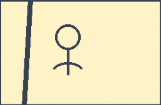

1
Desain

Instruksi:
Pilih karakter (Panji, Sekartaji, Gunungsari, Ragil Kuning, Klana, Bapang). Riset bentuk, warna, dan ekspresi sesuai pakem. Buat sketsa proporsi wajah di kertas: garis tengah, titik mata, pangkal hidung dan mulut. Siapkan ukuran S/M agar konsisten.